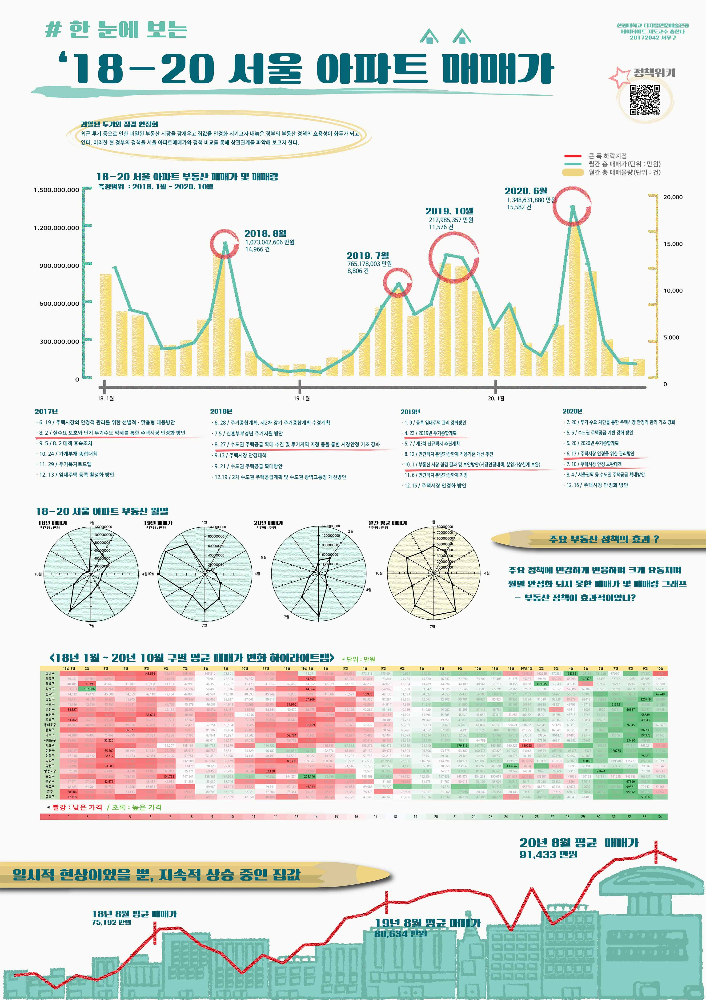

portpolio
> contact. E-mail: h20172642@g-mail.hallym.ac.kr
Home
Major
Sub
Act
Major2: Digital Humenities Arts
Major completion status
2020-2
Data Arts

Real estate data visualization was conducted on the increase in the sale price of apartments in Seoul.
The history of visual arts
I conducted a discourse on visual arts. Visual arts are illuminated from a philosophical point of view. This led to a change of ideas.